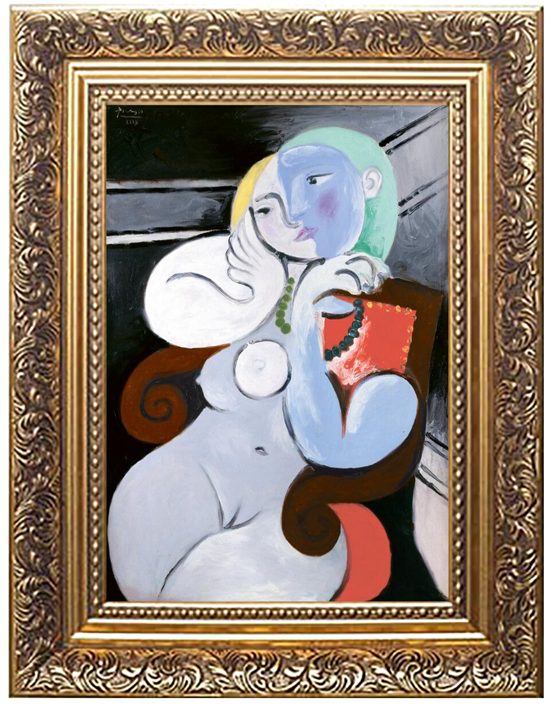
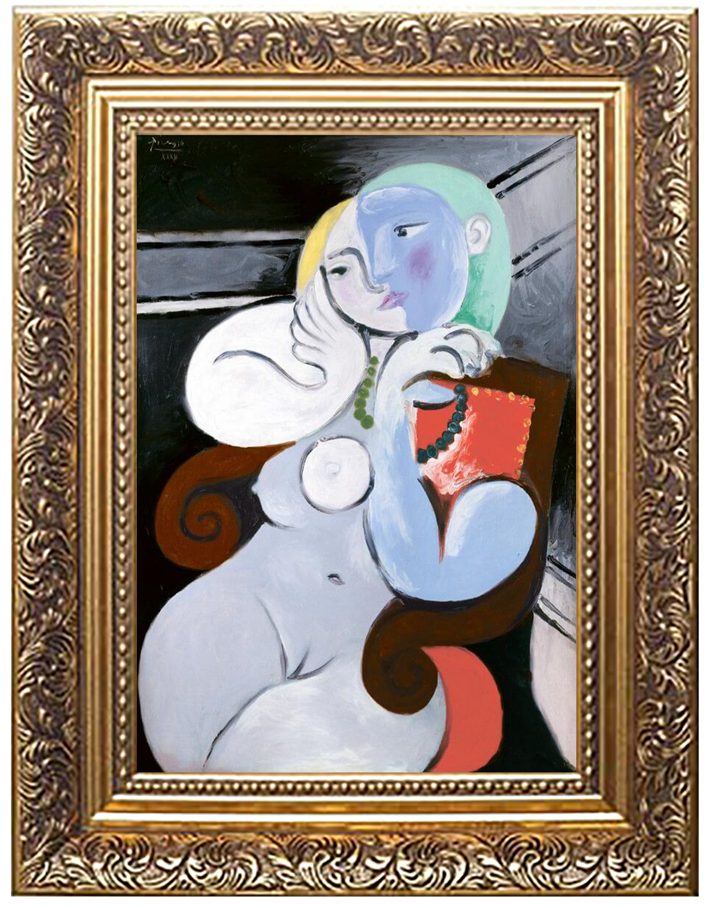

Pablo Picasso was a Spanish artist born on October 25, 1881 in Málaga, Spain. He is regarded as one of the most influential artists of the 20th century. Don José Ruiz was his father and an artist as well who taught at the School of Fine Arts in Barcelona where Picasso attended at the age of 13. Later on Picasso studied at Madrid’s Real Academia de Bellas Artes de San Fernando which at the time was Spain’s top art academy. He was known for going through many different periods such as the Blue Period, the Rose Period, African Influence, Analytic Cubism, Synthetic Cubism, and Neoclassicism and Surrealism. He often mixed various styles in order to create new interpretations of what he saw which led to fresh innovations in his craft. Picasso was a driving force and cofounder for the development of Cubism and was able to elevate collage to the level of fine art. Picasso died on April 8, 1973 in Mougins, France.
Pablo Picasso

 
